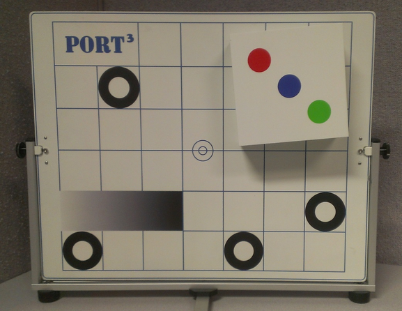
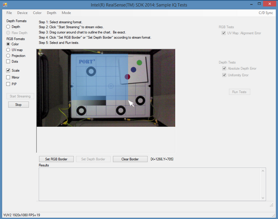
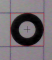
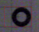
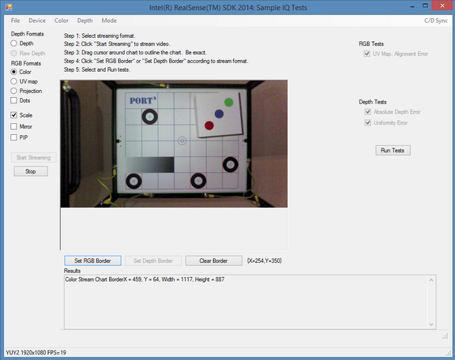
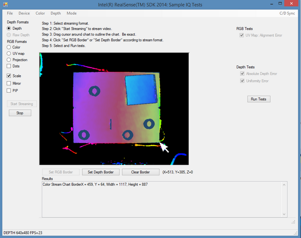
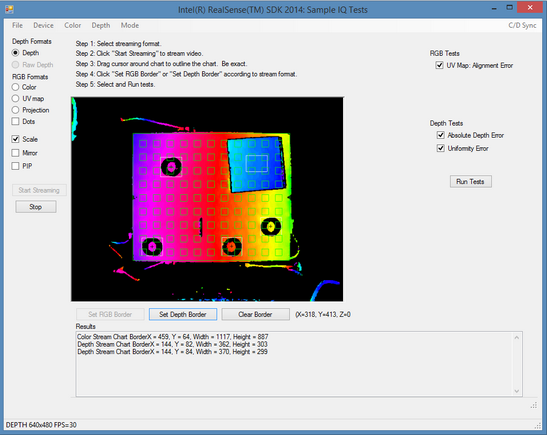
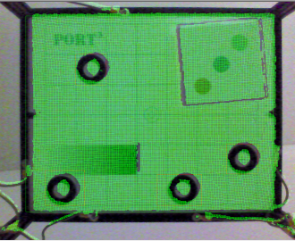

|
Introduction
The FF_IQSampleTool.cs application is based on the FF_RawStreams.cs sample. It showcases how to create tests for image quality that can be used with your camera. It features:
| • | Automatic Marker tracking |
| • | XYZ on-hover output for depth streams |
| • | Test for UV Map alignment error |
| • | Test for depth uniformity |
| • | Test for absolute depth values |
This application requires the use of a Port3 Test Chart. If you do not have one, you can print your own (Included in the source is “Port 3 Chart.pdf” under the Assets directory), as illustrated in Figure 134, but your test results for the protruding square will not be accurate. (The protruding square measures 12cm x 12cm x 5cm – you can also create your own out of card stock paper and attach it to your printed chart).

Figure 134: Test Chart for use with IQ Sample Tool
Getting Started
| 1. | Obtain a chart. If you have a Port3 test chart, go to the next step. If not, you will have to create one. |
| 2. | Setup your test area. Position your camera 50 cm away from the test chart. Ensure that the chart is parallel with the plane of the camera. If not parallel, test results can be skewed. (You can use a box, a metallic frame, the test chart with included spacer, etc. to do this). |
| 3. | Launch the application. If the camera is loaded successfully, the Depth radio button will be selectable. You will also see the 3D camera under the Device drop down menu. |
| 4. | Select the Color radio button and click on “Start Streaming” to run video. |
| 5. | For landmark tracking, the program must know the location of the test chart. To do this, you must outline the edges of the test chart. Drag your mouse cursor from one corner of the chart to the other. When done, click on “Set RGB Border”. See Figure 135 for an illustration. |

Figure 135: Specifying the chart edges for the Depth video stream.
| 6. | Ensure the fiducial markers have been located properly. You should see the black circles outlined by red squares. You should also see the black crosshairs in the center of the black circle markers. Look at Figure 136 for the proper alignment (left) and the improper alignment (right). Improper alignment stems from poor lighting (for the RGB video) or from the rounding error introduced during the edge selection. If the markers are not detected properly, repeat step 5, but experiment with different selection sizes. |
 
Figure 136: Left: Properly detected fiducial marker. Right: Detection Error
| 7. | Your screen should look like Figure 137. |

Figure 137: Proper Located Fiducial Markers.
| 8. | Now select the Depth radio button. The video will change to a depth-only view. |
| 9. | Specify the chart edges by dragging your mouse from one corner to the opposite corner. Click on “Set Depth Border” (see Figure 158). |

Figure 138: Specifying chart edges for Depth stream.
| 10. | Your view should now look like Figure 139: |

Figure 139: Selected Depth Edges.
| 11. | Notice that the fiducial markers are outlined in the white squares. The green squares are an array of ROIs (Regions of Interest) that are used for the Uniformity test. Check that all fiducial markers are properly aligned and that all green ROIs fall within the depth chart. If not, repeat Step 9. |
| 12. | Click Run Tests to analyze data. |
Tests
The UV Map aligns the RGB stream with the depth stream. This tests calculates the error in this alignment. An example of this error can be visibly seen when using the test chart. See Figure 140 for an example. Notice that the circular fiducial markers do not align. This is the UV Map alignment error.

Figure 140 :Depth data (green dots) overlayed on color stream.
This measures the depth from the surface of the protruding square and the camera plane. It is then compared to depth values recorded in the center of the black fiducial markers. Since the protruding square has a measurement of 12cm x 12cm x 5cm, the difference measured should equal 5 cm (50mm).
| o | This test creates an array of ROIs. The depth data of each ROI is then processed to get the mean and standard deviation. Uniformity can then be measured. |
| o | Any tilt error also becomes apparent with these results. |
|